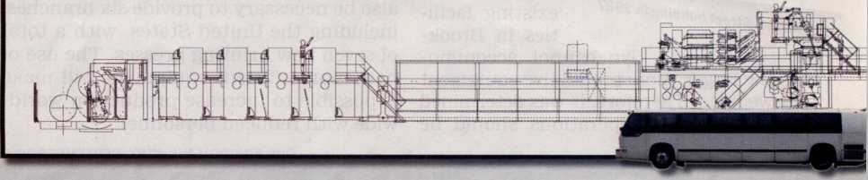
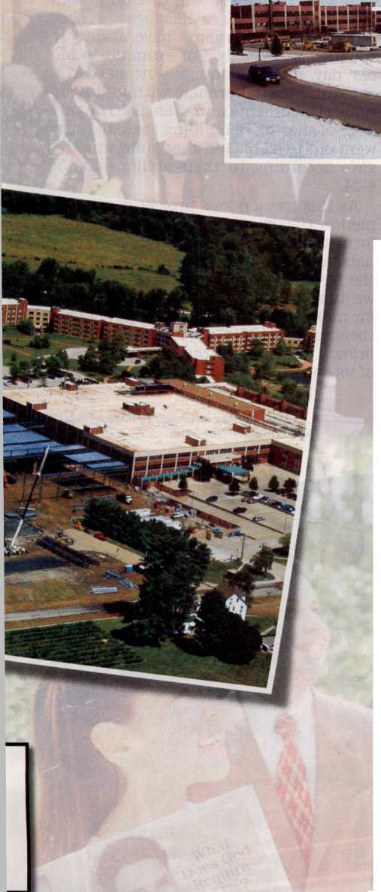
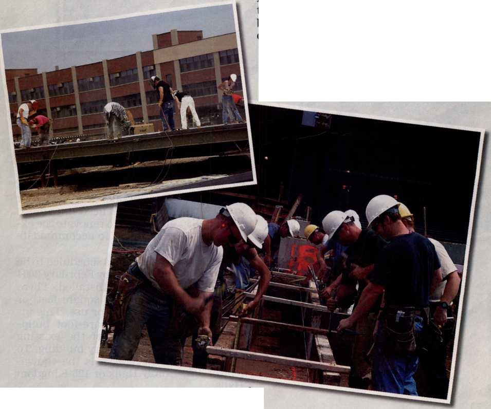

September 2003
For United States of America
km-E Us 9/03 Vol. 46, No. 9
dear Offimffio/n ffiab/ 'r/icrs :
“God kept making it grow.” (1 Cor. 3:6) How thrilling it has been to see the growth in the United States field! During the 2003 service year, over 70,000 new Bible studies were started. This is commendable.
Jehovah is blessing the activity in the foreign-language field. Congregations or groups have been established in 37 languages besides English and Spanish. Recently, the first Amharic and Indonesian congregations in the branch territory were formed. May we strive to reach the estimated 28 million foreign-born people living in the United States.
To supply literature for the growing worldwide field, the printery at Watchtower Farms, near Wallkill, New York, is being expanded. Good progress is being made in adding three and a half acres of floor space. This is equivalent to 30 average-size Kingdom Halls! Two large, state-of-the-art printing presses are scheduled to arrive early in 2004. Each press will be able to produce up to 25 magazines a second. New bindery and shipping equipment will also be installed during 2004. This will result in greater production with reduced personnel.
As we begin the 2004 service year, we join with you in praying that Jehovah will ‘keep making it grow.’
Your brothers,
/Z c/? O^rtuic/r Office
Clothe Yourselves With Humility
1A shepherd boy trusts in Jehovah and defeats a mighty warrior. (1 Sam. 17:45-47) A wealthy man patiently endures calamity. (Job 1:20-22; 2:9, 10) God’s Son directs all credit for his teaching to his Father. (John 7:15-18; 8:28) In each of these examples, humility played a key role. Similarly today, humility is vital in the situations that we face. —Col. 3:12.
2 When Preaching: As Christian ministers, we humbly share the good news with people of all sorts, not prejudging them on the basis of their race, culture, or background. (1 Cor. 9:22, 23) If some are rude or arrogantly reject the Kingdom message, we do not respond in kind but patiently go on searching for deserving ones. (Matt. 10:11, 14) Rather than trying to impress others with our knowledge or education, we direct attention to God’s Word, recognizing that it is more persuasive than anything that we might say. (1 Cor. 2:1-5; Heb. 4: 12) In imitation of Jesus, we give all praise to Jehovah.—Mark 10: 17,18.
3 In the Congregation: Christians must also ‘gird themselves with lowliness of mind toward one another.’ (1 Pet. 5:5) If we consider others as superior to ourselves, we will look for ways to serve our brothers rather than expecting them to serve us. (John 13:12-17; Phil. 2: 3, 4) We will not feel that we are above such tasks as cleaning the Kingdom Hall.
4 Humility helps us to ‘put up with one another in love’ and thus promotes peace and unity in the congregation. (Eph. 4:1-3) It helps us to be in subjection to those who are appointed to take the lead. (Heb. 13:17) It moves us to accept any counsel or discipline we may be given. (Ps. 141:5) And humility prompts us to rely on Jehovah when we care for any privileges we may receive in the congregation. (1 Pet. 4:11) Like David, we recognize that success depends not on human ability but on God’s blessing. —1 Sam. 17:37.
5 Before Our God: Above all, we need to ‘humble ourselves under the mighty hand of God.’ (1 Pet. 5:6) If we must contend with trying circumstances, we may long for the relief that the Kingdom will bring. But we humbly exercise patience, waiting for Jehovah to fulfill his promises at his appointed time. (Jas. 5:7-11) As was true of integrity-keeping Job, our foremost concern is that “the name of Jehovah continue to be blessed.”—Job 1:21.
6 The prophet Daniel ‘humbled himself before his God’ and was blessed with Jehovah’s favor and many fine privileges. (Dan. 10:11, 12) May we likewise clothe ourselves with humility, knowing that “the result of humility and the fear of Jehovah is riches and glory and life.”—Prov. 22:4.
Service Meeting Schedule
Week Starting September 8
Song 10
10 min: Local announcements. Selected Announcements from Our Kingdom Ministry. Encourage all to review their notes from the circuit assembly program for the past service year in preparation for next week’s Service Meeting. Using the suggestions on page 8, have two separate realistic demonstrations of how to present the September 15 Watchtower and the September 22 Awake! In one presentation, show a student or a parent witnessing to a schoolteacher.
1O min: Branch Letter. A discussion between a longtime publisher, preferably an elder, and a younger publisher. The younger publisher asks if the experienced publisher has seen the letter from the branch office in Our Kingdom Ministry. The experienced publisher explains that the branch letter was a feature of Our Kingdom Ministry during the 1960’s and 1970’s. They then discuss the letter on the front page, highlighting the main points.
25 min: “Youths—Build a Fine Foundation for the Future.”* To be handled by an elder, using the questions that are provided. When discussing paragraph 5, highlight the joys and blessings of full-time service.
Song 170 and concluding prayer.
Week Starting September 15
Song 199
io min: Local announcements. Accounts report.
10 min: “Studying the Worship God Book.” Talk by a book study overseer. Draw attention to the study schedule. When discussing the fourth paragraph, include comments on the Ministry School book, page 28, paragraph 1, and page 70.
25 min: “Trust in Jehovah and Do Good.” (Ps. 37:3) Audience discussion based on the following questions, which highlight key points of the circuit assembly program for the past service year. Invite audience to include comments on how they were able to apply key points personally or as family groups. Feature these program parts: (1) “Manifesting Trust in Jehovah.” Why is it vital to display trust In Jehovah in all aspects of life? (it-2 p. 521) How can the Watch Tower Publications Index help us? (2) “Guard Against the Vanities of Life.” (Eccl. 2:4-8,11) What vain works must we guard against, and how can we do so? (3) “Shun the Bad—Be Doers of Good." Why is it vital to adhere to Jehovah’s standards? (Isa. 5:20) With what good works should we be busy? (4) “Maintaining Our Confidence in Jehovah.” What will help us to stand firm in the face of trials and temptations? Why may we need to leave some things in Jehovah’s hands? (5) “Will You Be Counted Worthy of the Kingdom of God?” (Col. 1:10) What Bible examples stimulate us to continue walking worthily of Jehovah? (6) “Trust in Jehovah’s Promises.” How will doing this affect our lives?
Song 58 and concluding prayer.
Week Starting September 22
Song 7
10 min: Local announcements. Using the suggestions on page 8, have two separate demonstrations of how to present the October 1 Watchtower and the October 8 Awake! Show an elder and an infirm publisher doing telephone witnessing.
15 min: How Did We Do Last Year? The service overseer reviews highlights from the congregation report for the 2003 service year. Commend the congregation for the good things accomplished. Include appropriate points from the last report by the circuit overseer. Mention one or two reachable goals for the coming year. 20 min: “Increased Activity at United States Bethel.” Talk and audience discussion.
Song 39 and concluding prayer.
Week Starting September 29
Song 194
10 min: Local announcements. Remind publishers to turn in field service reports for September. Mention the literature offer for October. Have a brief demonstration of how to start a Bible study in the Require brochure.
15 min: Local needs.
20 min: “Clothe Yourselves With Humility.”* Draw comments from the audience on how the scriptures apply. Song 224 and concluding prayer.
Week Starting October 6
Song 170
10 min: Local announcements. This month we are making a special effort to start Bible studies. Briefly review the May 2002 Our Kingdom Ministry, page 1, paragraph 1.
15 min: “Be Sure to Put First Things First!” Talk and audience discussion based on the article in the September 1, 1998, Watchtower, pages 19-21. Mention the dates of the theocratic events scheduled for the next several months, and encourage all to mark these dates on their calendar. Invite audience to comment on what they do to avoid missing out on spiritual provisions.
20 min: Standing Up to Peer Pressure. Interview an elder or a ministerial servant who was raised in a Christian household. Refer to selected points from the February 15, 2003, Watchtower. What pressure did the brother face at school? (p. 24 par. 3; p. 25 pars. 4-5) Did he face any negative influence from others? (p. 26 pars. 4-6) Does he still face peer pressure as an adult? What has helped him to resist the pressure to conform? In brief concluding talk based on the August 1, 1999, Watchtower, pages 24-5, highlight the benefits of cultivating wholesome association. Song 26 and concluding prayer.
* Limit introductory comments to less than a minute, and follow with a question-and-answer discussion.
JUNE SERVICE REPORT
|
Number of: |
Av. Hrs. |
Av. Mags. |
Av. R.V. |
Av. Bi.St. | |
|
Sp’l Pios. |
167 |
105.6 |
92.3 49.7 |
5.1 | |
|
Pios. |
84,934 |
62.8 |
41.4 |
20.5 |
2.0 |
|
Aux. Pios. |
22,423 |
49.3 |
34.6 |
12.7 |
1.1 |
|
Pubs. |
856,063 |
9.2 |
8.1 |
3.6 |
0.4 |
TOTAL 963,587 Baptized: 4,322
© 2003 Christian Congregation of Jehovah's Witnesses. All rights reserved. Our Kingdom Ministry (ISSN 1067-7259) is published monthly by Christian Congregation of Jehovah's Witnesses: W. L. Van De Wall, President: W. H. Nonkes, Secretary-Treasurer; 2821 Route 22. Patterson, NY 12563-2237. Periodicals Postage Paid at Brooklyn, NY, and at additional mailing offices. POSTMASTER: Send address changes to Our Kingdom Ministry, 1000 Red Mills Road, Wallkill, NY 12589-3299. Printed in U.S.A.
.......—.
Copyright by MAN Roland Druckmaschinen AG
Branches Receiving New Presses and Delivery Dates
Increased theocratic activity brings greater joy. So there is great rejoicing as the United States branch prepares to move its printing, binding, and shipping operations from Brooklyn to Wallkill, New York. The existing printery at Wallkill is being renovated, a large addition is under construction, and new equipment has been purchased and will soon be in stalled.
Since 1927, the printery in Brook
lyn has produced over one billion books. There is, however, a need to update our older printing and binding equipment, some of which is 44 years old. This older equipment requires more maintenance and manpower _____ to operate. The dams street building in 1927 existing facili-
117 ties in Brook
lyn cannot accommodate the larger, more productive equipment that we need. Therefore, it was determined that the printery operations should be
Britain:
Brazil:
Japan:
Mexico:
South Africa: United States:
August 2003
November 2003
January 2004
February 2004
April 2004
April and May 2004
moved to Wallkill where efficient printing, binding, and shipping equipment could be installed.
The consolidation of the U.S. printery operations at Wallkill would not be possible without the recent reorganization of our worldwide production of books. Prior to this reorganization, the United States branch produced almost 50 percent of the books used in our work worldwide. Some book production has been shifted to other branches, making better use of their facilities and leaving the United States with a reduced workload. It will also be necessary to provide six branches, including the United States, with a total of seven new printing presses. The use of new, more efficient equipment will make it possible to increase production worldwide with reduced personnel.
New Equipment for Wallkill Printery: It was with great excitement that the Bethel family received the news that the Governing Body approved the purchase of two new high-speed MAN Lithoman rotary web offset presses for Wallkill. These new high-speed presses are capable of producing magazines and book signatures (individual printed sections of a book) at a rate of 90,000 per hour. This means that an average congregation order of 350 magazines can be produced in just 14 seconds. The two new presses, along with the three existing MAN Lithoman presses at Wallkill, will be able to supply the needs of the United States field.
As mentioned in the branch letter on the first page of this issue of Our Kingdom Ministry, new bindery equipment will also be installed at Wallkill. The new equipment is capable of producing hardcover books and deluxe Bibles at a rate of 120 a minute. The bindery will be set up with much of the equipment linked together by conveyors, allowing for efficient use of space and personnel.
The Shipping Department is also being designed for greater accuracy and efficiency by making better use of computer tools. A new high-rise storage system will allow literature to be stored in less than half the floor space currently used in Brooklyn. These improvements will contribute to a streamlined flow of literature to the over 12,000 congregations and groups in the United States and other areas we serve.
July2003 view
Press compared to a city bus
Length: 133 feet Height: 18 feet Weight: 201 tons
Progression of work ,
April 2003
July 2003
Construction Update: The progress on the printery addition at Wallkill has been excellent, with significant milestones reached successfully! The shell of the building, from foundation to roof, will be completed next month. Landscaping is nearly complete, and a massive mechanical system is being installed. Efforts to complete the interior, along with exterior finish work, have commenced in earnest. Work is also under way to renovate the existing printery building to accommodate new equipment.
The printery addition is scheduled to be substantially completed by February 2004 so that presses can be installed. There will be a total of 590,000 square feet, or 13 acres, of space ready for use. This includes a new 140,000-square-foot building and the renovation of the existing 450,000-square-foot printery building. To put this in perspective, it is the equivalent of 8 Assembly Halls or 125 Kingdom Halls.
Your Help Is Appreciated! Doubtless, it is the desire of each one of us to support this advancement of Kingdom interests fully. The number volunteering to assist with the construction work will likely exceed 1,000, and their assistance is greatly appreciated. Circumstances may not permit most of us to assist with the actual work, yet we are eager to provide support. How can we do so?
The total cost for the printery addition at Wallkill, including two of the seven new presses and other new production equipment, will likely be $50 million. Where does the money come from to pay for all of it? From voluntary contributions placed in the box marked “Contributions for the Worldwide Work—Matthew 24:14” in every Kingdom Hall, together with donations sent to the branch office by Christians who wish to see the will of God accomplished. Where there has been a need, Jehovah’s loyal servants have always responded generously. For example, in Moses’ day, material things were needed to construct the tabernacle with all its glorious attachments and utensils. The privilege of sharing in building the tabernacle went out to all of God’s servants, and they gave according to their ability.—Ex. 35: 4-24.
As this tremendous project nears completion (likely in early 2005), we will inform the congregations so that individuals and families can arrange to visit the new facilities. In the meantime, may we take this opportunity to thank you
for making possible the greatly increased theocratic activity at the United States branch. May Jehovah continue to bless all of us spiritually as a result.
"... the people continued to have a heart for working.”—Neh. 4:6.
■ Literature offer for September: Life —How Did It Get Here? By Evolution or by Creation? Before requesting additional supplies from the branch office, congregations should use what is available locally and check if nearby congregations have a surplus on hand. October: The Watchtower and Awake! magazines. Where interest is shown, offer the Require brochure, making a special effort to start Bible studies. November: What Does God Require of Us? or Knowledge That Leads to Everlasting Life. If people already have these, Worship the Only True God or an older publication may be offered. December: The Greatest Man Who Ever Lived. As an alternative offer, you may use My Book of Bible Stories, The Bible—God’s Word or Man’s?, or You Can Live Forever in Paradise on Earth.
■ U.S. Selective Service regulations require that all men register at the post office within 30 days after reaching 18 years of age. A male noncitizen under the age of 26 who takes up residency in the United States must also register with Selective Service within 30 days of becoming a resident. All of those required to do so should comply with this law, viewing it as a Christian’s obligation to the superior authorities. From the time he registers until the year he turns 26, a brother must notify Selective Service of any change of address within ten days of the change. Elders should be aware of young brothers nearing the age of 18 and new alien residents between the ages of 18 and 26 and remind them of their duty to register with the Selective Service System.
■ The branch office does not fill individual publishers’ requests for literature. The presiding overseer should arrange for an announcement to be made each month before the congregation monthly request for literature is sent to the branch so that all interested in obtaining personal literature items may advise the brother handling literature. Please keep in mind which publications are specialrequest items.
■ The elders are reminded to follow through on instructions given on pages 21-3 of the April 15, 1991, Watchtower regarding any disfellowshipped or disassociated ones who may be inclined toward becoming reinstated.
■ The special public talk for the 2004 Memorial season will be given on Sunday, April 18. The subject of the talk will be announced later. Those congregations having the visit of the circuit overseer or an assembly that weekend will have the special talk the following week. No congregation should have the special talk before April 18, 2004.
■ The Annual Congregation Property Documents Review Work Sheet (T-33-E) is to be completed each September by the secretary of the congregation holding title to Kingdom Hall property. Each congregation sharing use of the property should promptly
Worship the Only True God Study Schedule for 2003
|
Oct. |
20: |
chap. 1 |
|
27: |
chap. 2 | |
|
Nov. |
3: |
chap. 3 |
|
10: |
chap. 4 | |
|
17: |
chap. 5 | |
|
24: |
chap. 6 | |
|
Dec. |
1: |
chap. 7 |
|
8: |
chap. 8 | |
|
15: |
chap. 9 | |
|
22: |
chap. 10 | |
|
29: |
chap. 11 |
Study Schedule for 2004
|
Jan. |
5: |
chap. 12 |
|
12: |
chap. 13 | |
|
19: |
chap. 14 | |
|
26: |
chap. 15 | |
|
Feb. |
2: |
chap. 16 |
|
9: |
chap. 17 | |
|
16: |
chap. 18 | |
|
23: |
chap. 19 | |
|
Mar. |
1: |
chap. 20 |
|
8: |
chap. 21 |
receive a copy of the completed work sheet. If corrective actions are needed, the elders should care for these to protect the interests of the congregation. When the circuit overseer visits the congregation, he will review the congregation property documents and the Safety Inspection Work Sheet (T-34-E).
Studying the Worship God Book
Worship the Only True God is designed to be studied with new ones after they have completed a study of the Knowledge book. Our consideration of this publication at the Congregation Book Study will equip us to use this tool in the ministry and will help us to deepen our love and appreciation for Jehovah and his organization. How can we benefit fully from our study of the Worship God book?
Conducting the Study: Since we will be considering a full chapter each week, book study overseers will need to apportion the time wisely. They will want to keep the study moving during the introductory paragraphs to allow more time for the weightier material, which generally appears later in the chapter. Briefly discussing the review box at the conclusion of each study will assist those present to retain the key points.
Indented questions for meditation and discussion appear in about half the chapters of the Worship God book. An example can be found on pages 48-9. It is not necessary for such questions to be read along with the paragraphs. When considering them with the group, the overseer should have the cited scriptures read and discussed as time permits.
Advance Preparation: Preparing well for the study involves more than underlining the answers. Prayerful meditation on the cited scriptures will enable us to prepare not only our comments but, more important, our hearts. (Ezra 7:10) All of us can contribute to an interchange of encouragement by modestly offering our comments.—Rom. 1:11,12.
Our study of the Worship God book will help us to draw close to Jehovah and will equip us to help honesthearted ones join us in worshiping him. (Ps. 95:6; Jas. 4:8) May all of us benefit fully from this fine spiritual provision.
What to Say About the Magazines
1 What is foremost in your mind? What do you think about? Are your primary concerns centered on things present, or do they reach into the future and focus on what God has promised? (Matt. 6:24, 3133; Luke 8:14) Strong faith is needed to act on God’s promises, as can be seen from the examples of Abraham and Moses. (Heb. 11:8-10, 24-26) How can you develop such faith and build “a fine foundation for the future”?—1 Tim. 6:19.
2 Search for Jehovah: If you have a routine of spiritual activity with your family, that is commendable. But do not assume that such a routine will automatically produce strong faith. To find “the very knowledge of God,” you must personally search for Jehovah. (Prov. 2:3-5; 1 Chron. 28:9) Young King Josiah did that. Despite growing up in a less-than-ideal spiritual environment, “he started to search for the God of David his forefather” when he was 15 years old.—2 Chron. 34:3.
3 How can you search for Jehovah? By carefully examining what you believe and ‘proving to yourself’ that it really is the truth. (Rom. 12:2) For example, can you explain what the Bible says about blood or prove that God’s Kingdom began ruling in the heavens in 1914? Acquiring “an accurate knowledge of truth” is an important part of building a fine foundation for the future—1 Tim. 2:3, 4.
1. Why do Christian youths need to develop strong faith?
2. What do we learn from King Josiah’s example?
3. How can young Christians today search for Jehovah?
4 Josiah’s search for God yielded good results. Before he reached the age of 20, he acted courageously to rid the land of false worship. (2 Chron. 34:3-7) Likewise, your spiritual progress will become manifest by your actions. (1 Tim. 4:15) If you are an unbaptized publisher, strive to improve the quality of your ministry. Do not be content simply to offer literature. Make it your aim to use the Bible, to reason with people, and to cultivate the interest that you find. (Rom. 12:7) This will help you to grow spiritually.
5 Give Jehovah Your Best: When you symbolize your dedication to Jehovah by getting baptized, you become an ordained minister of God. (2 Cor. 3:5, 6) This opens up opportunities for you to serve Jehovah full-time. These include pioneering as well as Bethel, missionary, and international service. Still other ways to expand your ministry are by learning another language or by moving to serve where the need is greater.
6 Of course, not all can make themselves available for these privileges of service, but each of us can give Jehovah his best. (Matt. 22:37) Whatever your circumstances, make serving Jehovah the focus of your life. (Ps. 16:5) By so doing, you will be building a fine foundation for the future.
4. How can unbaptized publishers make their advancement manifest?
5. What opportunities to expand their ministry are available to baptized Christians?
6. How can all of us build a fine foundation for the future?
Announcing Jehovah’S Kingdom
“In today’s world some feel they are trapped in a loveless marriage. Where can people like that turn for help? [Allow for response.] The Bible assures us that God’s principles can aid us. [Read Isaiah 48:17, 18.] This issue of The Watchtower considers Bible principles that can strengthen a marriage.”
Awake! Sept. 22
“We marvel at the ability animals have to communicate. But did you know that in certain respects humans are unique? [Allow for response. Then read Psalm 65:2.] Unlike animals, we desire to communicate with God. This magazine discusses how we can enjoy good communication both with people and with God.”
AnnouncingJehovah’s Kingdom
“Have you ever asked, ‘If God is loving and allpowerful, why doesn’t he intervene in behalf of those who are suffering?’ [Allow for response.] Soon he will end all problems. [Read Isaiah 65:17.] In the meantime, God is not simply observing indifferently while we suffer, as this magazine shows.”
Awake! Oct. 8
“Have you heard that many farmers are finding it difficult to continue farming for a living? [Allow for response.] This issue of Awake! discusses this problem as well as the Bible’s promise of better times ahead. [Read Psalm 72:16.] When I return, I would like to explain how God will accomplish this.”
8